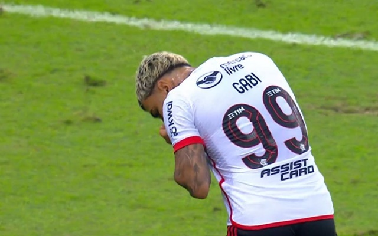

Taça Rio - 1978, 1983, 1985, 1986, 1991, 1996, 2000, 2009, 2011 e 2019.
A atual situação do "Príncipe" rubro-negro
Atualmente um dos maiores ídolos do Mais Querido, dado pela torcida como príncipe do mengão, vive uma tremenda má fase, repleta de polêmicas. E por hora é especulada uma possível saída de Gabigol do Mengão, para um rival. No momento o futuro indefinido de Gabriel está aberto para negociações.

Elenco do Mengão
O Elenco principal do Flamengo na temporada conta com os seguintes jogadores:
Goleiros:
Agustín Rossi (1)
Matheus Cunha (25)
Zagueiros:
Léo Pereira (4)
David Luiz (23)
Cleiton (33)
Fabrício Bruno (15)
Léo Ortiz (3)
Laterais direitos:
Varela (2)
Wesley (43)
Laterais esquerdos:
Matías Viña (17)
Ayrton Lucas (6)
Volantes:
Igor Jesus (48)
Erick Pulgar (5)
Gerson (8)
Allan (21)
Meias:
Matheus Gonçalves (20)
Arrascaeta (14)
Victor Hugo (29)
De la Cruz (18)
Atacantes:
Gabigol (99)
Bruno Henrique (27)
Pedro (9)
Cebolinha (11)
Luiz Araújo (7)
Carlinhos (22)
É o Mengão!!!!!
Hierarquia Rubro-Negra
Atualmente no Mais Querido é proposta a seguinte hierarquia: Zico: Rei O intitulado como Rei rubro-negro conseguiu os seguintes títulos pelo time carioca: 7 Campeonatos Cariocas: 1972, 1974, 1978, 1979, 1979 (especial), 1981 e 1986;
4 Campeonatos Brasileiros: 1980, 1982, 1983 e 1987;
1 Libertadores: 1981;
1 Mundial de Clubes: 1981.